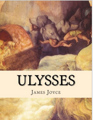

Ulysses chronicles the passage of Leopold Bloom through Dublin during an ordinary day, June 16, 1904. The title parallels and alludes to Odysseus (Latinised into Ulysses), the hero of Homer's Odyssey (e.g., the correspondences between Leopold Bloom and Odysseus, Molly Bloom and Penelope, and Stephen Dedalus and Telemachus). Joyce fans worldwide now celebrate June 16 as Bloomsday.
